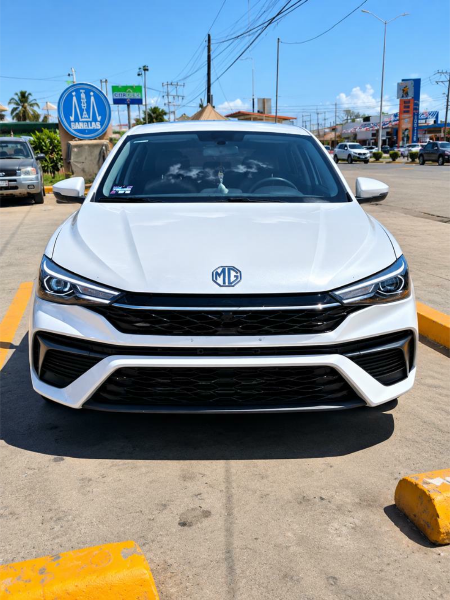
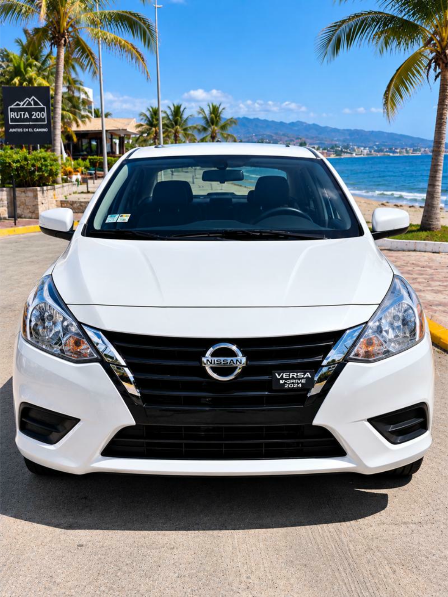
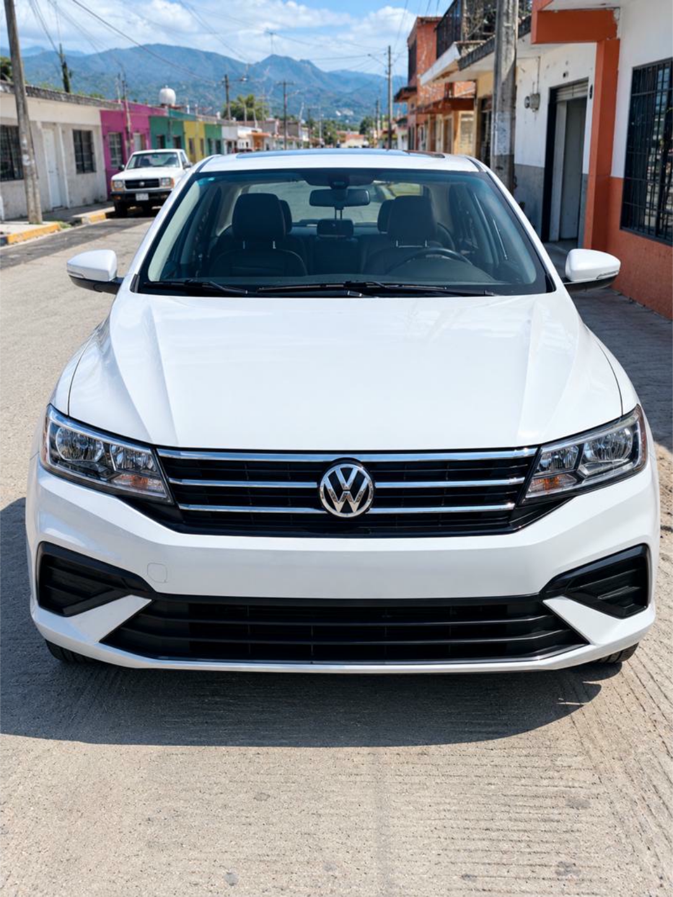
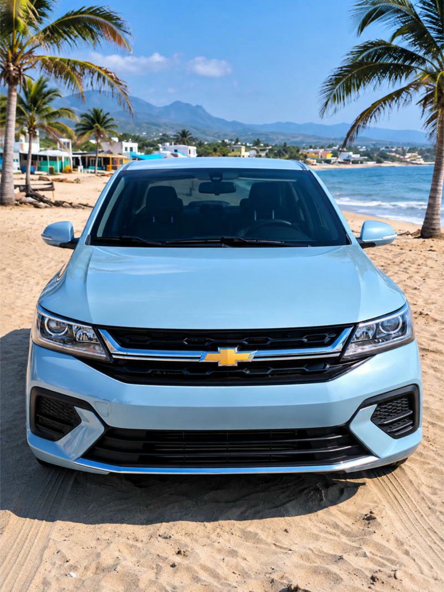
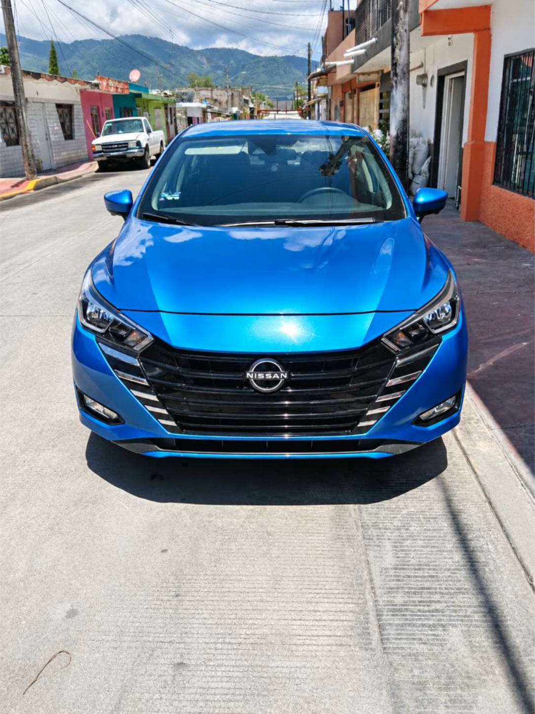

Tepic · Bahía de Banderas
Tu viaje
empieza aquí.
Tepic Mezcales
Reserva tu lugar y viaja con RUTA 200.
$250 MXNpor asiento · Pago al abordar
Consultar salidas y reservar Atención por WhatsAppConoce nuestros carros





Elige tu horario. Te asignamos un carro con lugares para tu grupo.
Fácil, desde tu celular o computadora
Así reservas
Confirma tu teléfono
Recibe tu código por SMS para comenzar.
Completa tu selfie
Una prueba breve para confirmar tu presencia.
Reserva y recibe tu boleto
Elige recorrido, fecha, horario y asientos.
La verificación nos ayuda a evitar reservaciones falsas y a cuidar los lugares disponibles.
Empezar mi reserva →